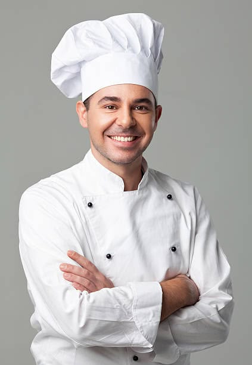

Jean Marcos
Born in 1986, he obtained his degree from the University of Pennsylvania and joined the restaurant in 2015. He's the manager of the burgers kitchen.

Leonardo Feghali
Born in 1987, he obtained a Diploma in Culinary Arts from Oxford University and joined the restaurant in 2016. He is responsible for the pizza department.

Francois Markiz
Born in 1991, he obtained his degree from Oakland in Cleveland City and mastered the kitchen of sandwiches at the age of 17 and joined our restaurant in 2019.

Steven Jabra
Born in 1983, studied at Harvard in England, worked with chef Gordon Ramsay, and mastered salads. Joined our restaurant in 2015.